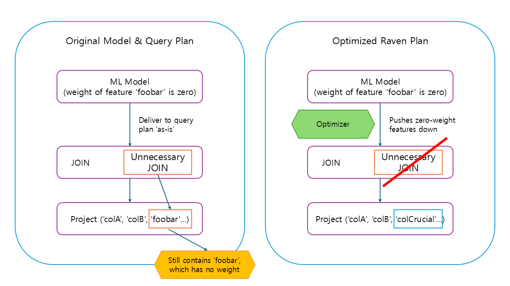

Why Your Database Should Run Your ML Models: A Look at Raven
Published: October 26, 2025
Based on: Extending Relational Query Processing with ML Inference
← Back to Blog ListMachine learning models are no longer niche research projects; they are core components of modern enterprise applications. As ML becomes more deeply integrated, it faces a new set of critical challenges: governance, security, auditing, and high-availability.
For decades, we have solved exact problems for data using the Relational Database Management System (RDBMS). RDBMSs are already the trusted, battle-hardened fortresses of the enterprise. So, an obvious question arises: why don't we just put our ML models inside the database?
The immediate pushback is performance. Surely, a general-purpose database engine can't compete with a dedicated, optimized framework like ONNX Runtime or TensorFlow for the complex task of ML inference.
A 2019 paper from Microsoft Research, "Extending Relational Query Processing with ML Inference," tackles this question head-on. Their answer is a resounding "yes, it can," and their system, Raven, demonstrates that an in-database approach is not only viable but can be dramatically faster than standalone frameworks, showing speedups of up to 24x.
The Problem with Existing Silos
The typical way ML inference is served today looks something like this:
- An application needs a prediction.
- It queries a database (e.g.,
SELECT * FROM patient_info WHERE patient_id = 123). - The database returns the data to the application.
- The application (running on a separate server) preprocesses the data (featurization).
- It then sends this data to an ML model (often served as a microservice).
- The model returns a prediction to the application.
- The application finally does something with the result.
This siloed architecture is a performance and governance nightmare:
- Massive Data Movement: You are constantly shuttling data out of the database, over the network, and into your application's memory, only to throw most of it away.
- No Holistic Optimization: The database has no idea why the application needs the data. It might diligently perform a complex JOIN to retrieve 10 million rows, but the application only needed two columns for its model. The database and the ML runtime are "dumb" to each other's needs.
- Broken Governance: Sensitive data is now in two (or more) places: the secure RDBMS and the application server's memory. This doubles the attack surface and creates an auditing black hole.
The Raven Approach: A Unified "To-Do List"
The Raven team recognized that the RDBMS is already a highly sophisticated query optimizer. The goal should be to extend this optimization power to include ML operators.
The core idea is a Unified Intermediate Representation (IR). An IR is just a "to-do list" that a system generates from a query. A database's IR has steps like Scan, Join, and Filter. An ML framework's IR has steps like MatrixMultiply and StandardScaler. Raven's insight was to create a single, unified IR that includes both relational operators and ML operators in one graph.
The workflow looks like this:
- Input: An analyst writes a SQL query (Q) that calls a model. A data scientist provides the model pipeline (M), (e.g., in Python/scikit-learn).
- Static Analysis: Raven parses both the SQL query and the Python model, translating them into a single Unified IR graph. Now, data tables, SQL
JOINs,CategoricalEncodingsteps, and theDecisionTreeClassifierare all nodes in the same plan. - Cross-Optimization: This is the magic. The Raven optimizer now rewrites this unified graph, passing information between the database and ML nodes.
- Execution: The final, optimized plan is executed by a deeply integrated
SQL Server + ONNX Runtimeengine.
Soar Beyond The Silo: 4 Powerful Cross-Optimizations
Because Raven sees the entire end-to-end plan, it can perform optimizations that are impossible in a siloed system.
1. Predicate-Based Model Pruning (Data-to-Model)
This optimization "pushes" information from the SQL query into the ML model to simplify it.
- What it is: Imagine your SQL query has a
WHERE pregnant = 1clause. In a traditional system, the database filters the data, and then the model runs. In Raven, the optimizer sees this predicate and propagates it into the decision tree model itself. It can statically "prune" any branch of the tree that starts withpregnant = 0, as it knows that branch will never be taken. - The Impact: The model itself becomes simpler and faster to execute at query time.
2. Model-Projection Pushdown (Model-to-Data)
This is the reverse: the optimizer "pushes" information from the ML model down into the database query.
- What it is: Many ML models end up with many "zero-weight" features. These features are useless—they are multiplied by zero and have no impact on the final prediction. Raven's optimizer inspects the model, identifies these zero-weight features, and adds a
PROJECToperator early in the database plan to discard those columns. - The Impact: The database doesn't even bother reading useless columns from disk. Better yet, if a JOIN operation's only purpose was to retrieve a feature that is now known to be useless, that entire
JOINcan be eliminated. This optimization alone yielded speedups of up to 5.3x in the paper's tests.
3. Model Inlining
This optimization completely erases the line between the model and the database engine.
- What it is: Some ML models, like a decision tree, are fundamentally just a set of
IF/THEN/ELSErules. Raven can translate these simple models directly into an equivalent SQL User-Defined Function (UDF). Modern SQL servers can then "inline" this UDF, effectively making the model's logic a native part of the SQL query plan. - The Impact: This eliminates all overhead of calling an external ML runtime. In the paper's evaluation, inlining a decision tree sped up the query by ~17x. When combined with the predicate pruning from "Predicate-Based Model Pruning", the total speedup reached 24.5x.
4. NN Translation
This optimization acts as a "universal adapter" to leverage high-performance hardware.
- What it is: Classical ML frameworks like scikit-learn are not always optimized for modern parallel hardware like GPUs. Highly-optimized Neural Network (NN) runtimes, like ONNX Runtime, are. Raven introduces transformations that can rewrite classical models (like Random Forests) and featurizers into equivalent neural networks.
- The Impact: This allows a "classical" ML pipeline to be executed by the highly efficient, hardware-accelerated ONNX Runtime, unlocking GPU acceleration. This translation gave a 15x speedup over scikit-learn on a GPU for 1 million rows.
By using those cross-optimizations, Raven's final goal is to construct cost-based cascades optimizer.
The Surprising Result: Beating Standalone Frameworks
The cross-optimizations are powerful, but the most telling result from the paper answers the original question: What about a head-to-head comparison for pure inference?
The team compared their integrated Raven (SQL Server + ONNX Runtime) against a standalone ONNX Runtime (ORT) just reading from a file.
- For small datasets (up to 50K tuples), Raven was faster. Why? SQL Server has sophisticated caching for models and inference sessions, avoiding the overhead ( <15%) of loading the model from disk.
- For very large datasets (1M-10M tuples), Raven was up to 5.5x faster than the standalone ONNX Runtime.
This result is stunning. How can a "bloated" database beat a lean, dedicated C++ inference engine?
The answer: automatic parallelism.
When SQL Server was given the query, its mature optimizer automatically parallelized both the data scan and the PREDICT operation across all available CPU cores. The standalone ONNX Runtime did not, running sequentially. While one could manually parallelize the work for the standalone framework, it's non-trivial. Raven got this massive performance boost for free, simply by piggybacking on decades of RDBMS optimization research.
Final Thoughts
The Raven paper shows that the long-held assumption—that databases are for data and ML frameworks are for models—is not just outdated, but suboptimal. By treating ML inference as a first-class citizen within the database, we don't just solve enterprise governance problems; we unlock a new class of "cross-domain" optimizations that are impossible when the two systems live in separate silos.
This work suggests a future where the line between data processing and ML inference blurs completely. The database engine, far from being a "dumb" data store, is poised to become the central, highly-optimized, and secure hub for both.